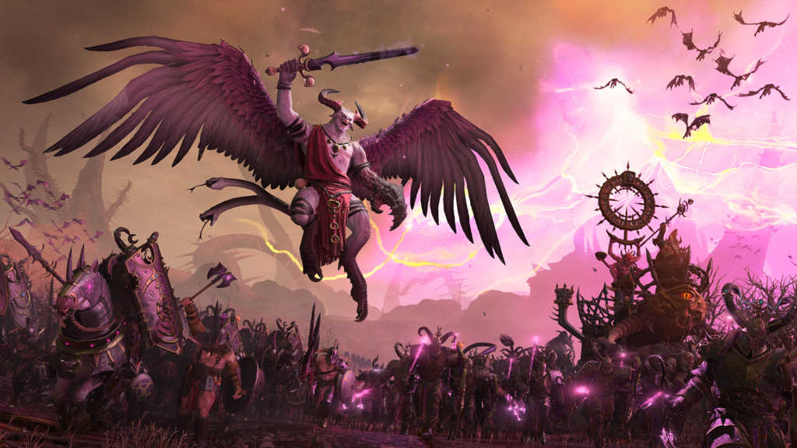
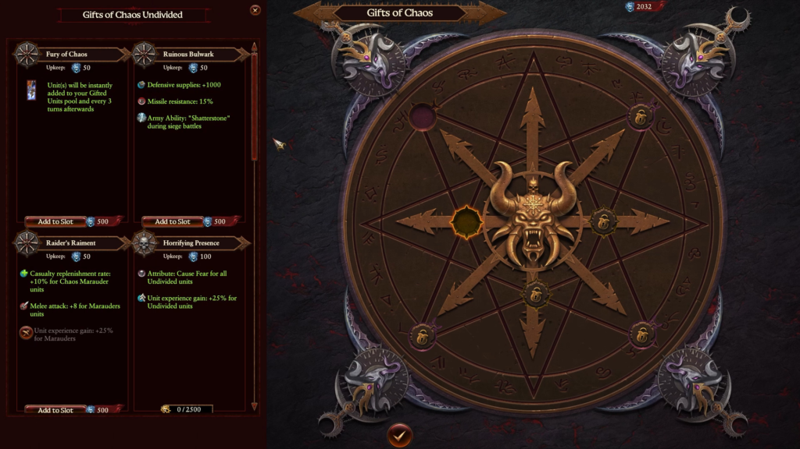
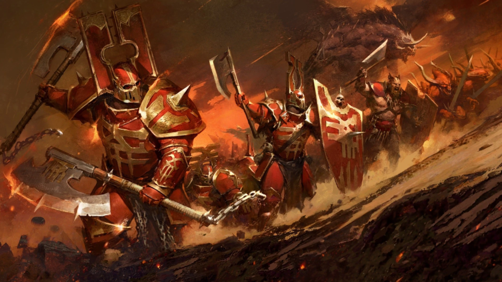

TOTAL WAR: WARHAMMER 3 | UPDATE + DLC | REVIEW
Aun haaaay maaaa aaaass
Creative Assembly continúa sin pausa en la producción de lo que creemos sería la entrega más ambiciosa y completa de toda la saga Total War, anunciando este próximo 23 de agosto el próximo DLC conocido como Campeones del Caos y la liberación de la beta de Immortal Empires, que ofrecen nuevas facciones, nuevos objetivos y una impresionante extensión del universo Warhammer.
¿Pero que querés decir barbeta? Bueno, empecemos por lo que podremos acceder ya mismo por tener el juego:
Los imperios inmortales contratacan
La próxima gran actualización responde a las fantasías de todo fanático: ¿Qué es mejor que un mapa más grande? Bueno, ¿qué tal si la respuesta es TODO lo que se conoce hasta el momento? Exacto, este nuevo contenido incluye nada más ni nada menos que todo lo existente hasta ahora a través de las sagas, una extensión de los mapas y todas las civilizaciones echadas de menos como los condes vampiros, así como sus hermanos piratas, los reyes funerarios, hombres-lagarto, entre otros, adaptados enteramente a las mecánicas de WH3.
Se puede apreciar desde un primer momento como esto ha impactado en el campo de juego, haciendo el mapa indescriptiblemente grande, lleno de vida y batallas, donde el adaptarse a los distintos estilos de juego de las 23 razas y múltiples facciones que enfrentaremos supondrán un desafío sumamente interesante. Adicionalmente, se realizaron unos más que bienvenidos arreglos de conocidos bugs que restaban experiencia de vida al título, quedando más limpio y dinámico, así como un balance general de razas y unidades.
Los desarrolladores han mostrado en redes sociales su satisfacción al hacer crecer este gran proyecto, mencionando que respetarían su vieja tradición de agregar extensivo contenido al título principal, prometiendo muchas más actualizaciones en lo que resta del año y 2023. Dato de color: se está evaluando la posibilidad de agregar a la campaña Imperios Inmortales el mapa de Reinos del Caos, agrandando aún más el espacio de juego.
Ahora sí, el piatto forte: Campeones del Caos DLC
Este masivo contenido adicional (pago) le da un giro inesperado a la trama del vacío de poder que la muerte del dios Ursun ocasionó, siendo aquí los protagonistas la raza de los guerreros de los caos dispuestos a inundar de sangre los campos de batalla para acceder al Altar de las Almas en Zanbaijin y reclamar todo el poder de las almas para su respectivo Dios del caos.
El pack incluye cuatro poderosos Lores Legendarios representantes de las caóticas deidades, resultando en un mashup de mecánicas y estrategias a adoptar. Al mismo tiempo incluye nuevas campañas y objetivos únicos a cada Señor y el agregado de personajes heroicos, guerreros del caos especiales y cuatro regimientos de Renombre.
Regalitos caóticos y otras yerbas
Las mecánicas agregadas incluyen varios caminos muy interesantes, entre ellos la posibilidad de acceder a Regalos del Caos, que funcionan como ventajas que se sustentan por las almas de nuestros enemigos derrotados, siendo esto un nuevo recurso a tener en cuenta sobre la planificación del imperio bajo nuestro control.
Otro punto interesante de esta expansión es el agregado de las Fortalezas Oscuras y la capacidad de convertir a la raza Norscan en vasallos, a quienes en base de tortazos y conquistas podremos mantener bajo nuestro control.
Pero lo que resulta abrumadoramente poderoso en esta raza, con este nuevo contenido, es que las fuerzas pueden ser contratadas sin necesidad de esperar ningún turno (ojo al piojo, porque esto puede conllevar a una furia de compra de unidades y quedar en bancarrota), y ciertas unidades de los ejércitos caóticos pueden ir ascendiendo a poderosos escuadrones heroicos con inigualable fuerza, con la capacidad de otorgarles Marcas del Caos que definirán su inclinación a las diversas deidades, adoptando las ventajas que supone su alineación.
Este nuevo contenido sienta realmente bien en la evolución de este mastodóntico juego, agregando nuevas posibilidades que refrescan en gameplay y mantienen la cabeza en actividad continua. Las mecánicas adicionadas son muy interesantes y permiten un sinfín de nuevas estrategias bélicas asimismo como lo abrumadoramente grande que resulta el mapa de juego, ofreciendo aún más horas de diversión intensa, con el condimento adicional de poder jugar con la raza que a uno se le ocurra.
Desde CDF se recomienda fervientemente darle una oportunidad, con el certificado que es una entrega que no decepciona y cuyos desarrolladores continuamente trabajan en mejorar el título, estando muy atentos a las opiniones de la creciente comunidad.